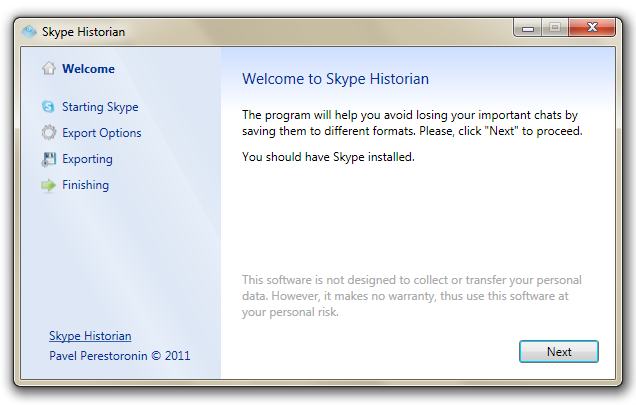
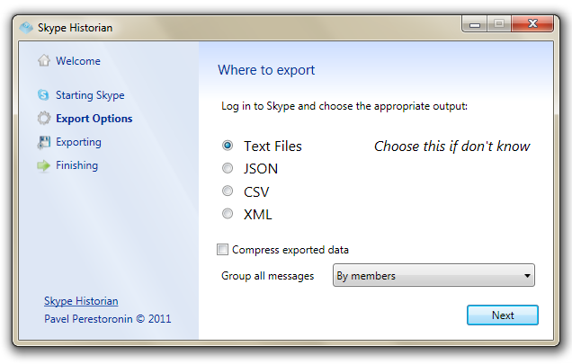
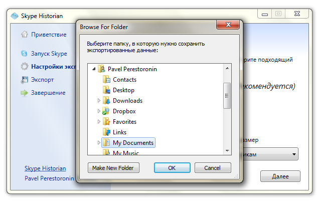
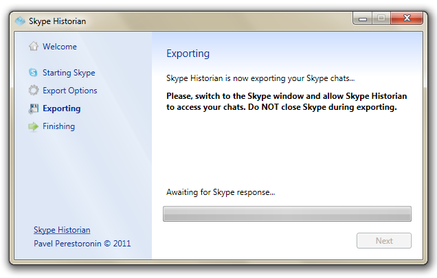
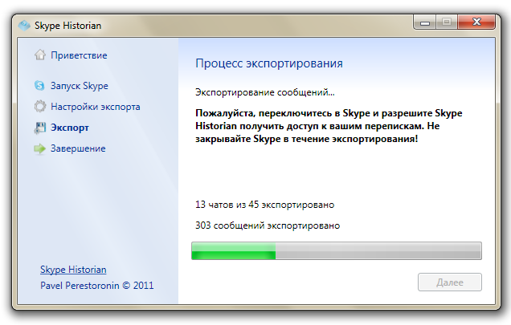
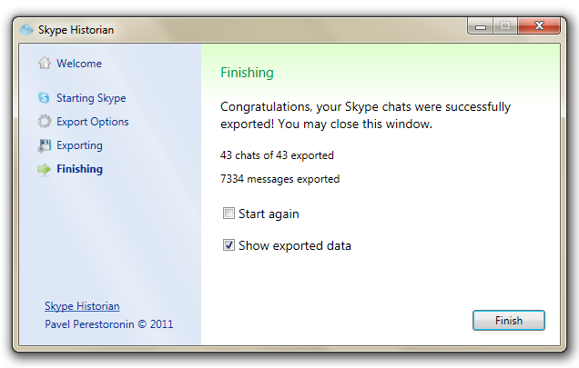

Приветствие
Нажмите "Далее". У вас должен быть установлен Skype.
Выбор формата
On this step you should choose the output. Choose the "Text Files" if you don't known what you need (you'll be able to open these files in any text editor like Notepad). You can then choose how should your messages be grouped. Grouping means that your messages will be grouped in subfolders for faster search then. Finally, you can choose to compress all data into a single ZIP file to reduce used space.
Нажмите "Далее".
Выбор конечной папки
Choose a folder you want to save your chats to and press "Next". Вход в Skype должен быть выполнен.
Ожидание
At that step Skype Historian connects to the Skype. You may need to switch to the Skype window and press the "Allow access" button on the top of the window.
Экспорт
Skype Historian экспортирует ваши переписки. :)
Завершение
Ready! Your chats are exported and saved. You may choose to show the exported data (opens the Windows Explorer). Also, you may tick the "Start again" checkbox to run Skype Historian from the start (for example, if you want to export to another format).